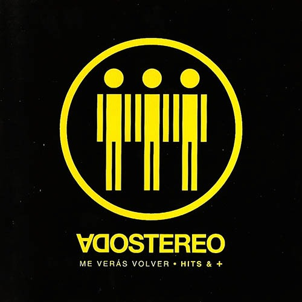
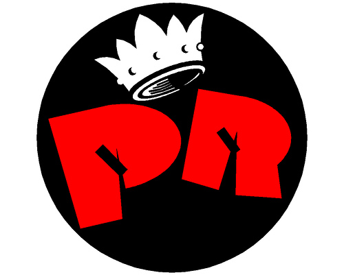

Soda Stereo

Soda Stereo fue una banda de rock argentina, formada en Buenos Aires en el año 1982 por Gustavo Cerati (voz, guitarra), Héctor «Zeta» Bosio (bajo) y Carlos Alberto Ficicchia «Charly Alberti» (batería), considerada una de las más influyentes e importantes bandas iberoamericanas de todos los tiempos y una leyenda de la música latina. La banda tuvo un papel muy importante en el desarrollo y la difusión del rock iberoamericano, rock en español durante las décadas de 1980 y 1990. Fueron el primer grupo de habla hispana en conseguir un éxito masivo en Latinoamérica. Soda Stereo ha encabezado las listas de todos los tiempos en su nativa Argentina, donde se establecieron varios récords de ventas de discos y asistencias a conciertos.
Miembros de la Banda
| Nombre |
Rol en la Banda |
Período de Tiempo |
| Gustavo Cerati |
Voz principal y guitarra |
1982-1997 |
| Zeta Bosio |
Bajo y Coros |
1982-1997 |
| Charly Alberti |
Batería |
1982-1997 |
Patricio Rey y sus Redonditos de Ricota

Patricio Rey y sus Redonditos de Ricota fue una agrupación de rock alternativo oriunda de La Plata, Argentina, liderada por el Indio Solari, Skay Beilinson y la Negra Poli. Es considerada una de las bandas más importantes e influyentes de la música popular argentina.Creó una estética original dentro del rock; alcanzó la masividad manteniéndose al margen de la industria musical durante sus veinticinco años en actividad. Los primeros recitales fueron promovidos por el boca en boca3 informando a su público en vivo quienes luego se pasaban la información unos a otros. Al margen de los reconocimientos mediáticos y las premiaciones (con excepciones como el Diploma al Mérito de la Fundación Konex que reconoció su trayectoria en 1995 y en 2005 con el Premio Konex de platino a la mejor banda de rock de la década, compartido con Divididos).En su obra, las metáforas proliferan en sus letras, el vanguardismo en su puesta en escena y un imperante misticismo en sus obras gráficas. Representa un paradigma contracultural, reforzado por la calidad autogestiva e independiente de su producción.Musicalmente se destaca por sus registros armónicos menores y disminuidos, por su primera guitarra siempre presente en combinación con la melodía vocal y por sus agregados de múltiples instrumentos, como saxofón, violín, trompeta, piano, armónica, percusión y también samplers y sintetizadores en muchas de sus canciones.
Miembros de la Banda
| Nombre |
Rol en la Banda |
Período de Tiempo |
| Indio Solari |
Voz principal |
1977-2001 |
| Skay Beilinson |
Guitarra |
1977-2001 |
| Semilla Bucciarelli |
Bajo |
1982-2001 |
| Walter Sidotti |
Batería |
1987-2001 |
| Sergio Dawi |
Saxofón,armónica y piano |
1987-2001 |
| Willy Crook |
Saxofón |
1984-1987 |
| Tito Fargo |
Guitarra |
1984-1987 |
| Piojo Ábalos |
Batería |
1984-1986 |
| Conejo Jolivet |
Guitarra y slide |
1978-1979
1993-1998 |
| Gonzalo Palacios |
Saxofón |
1983-1984 |